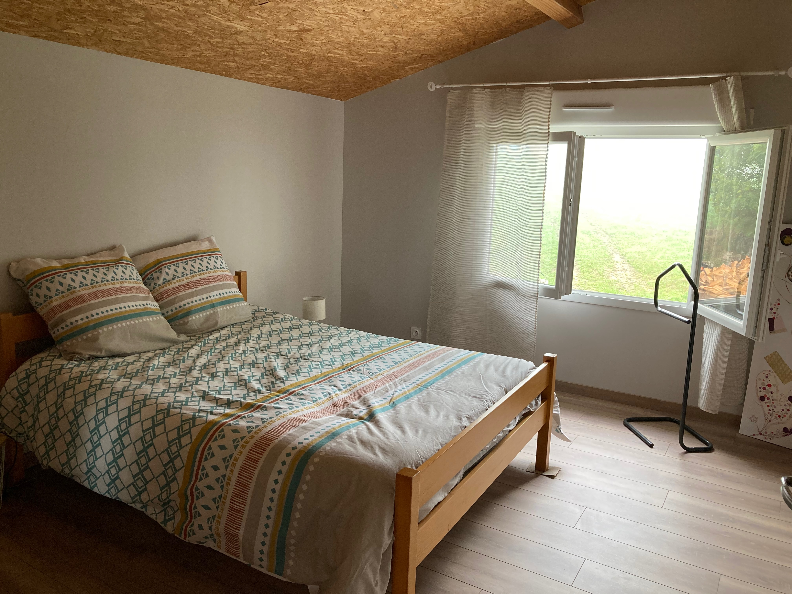
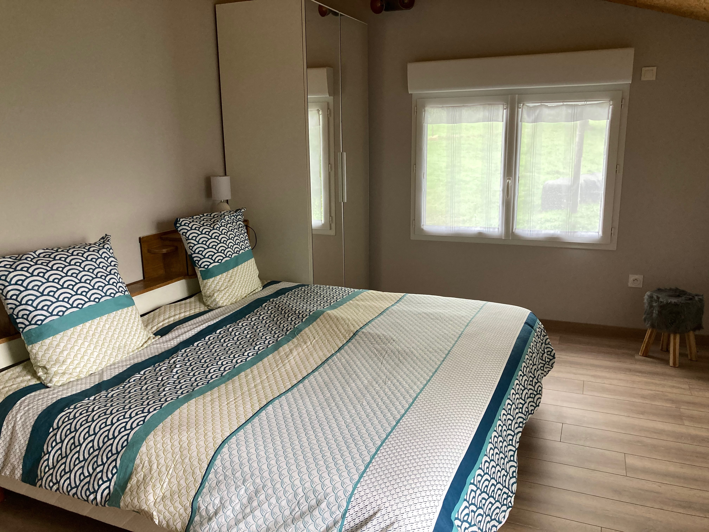
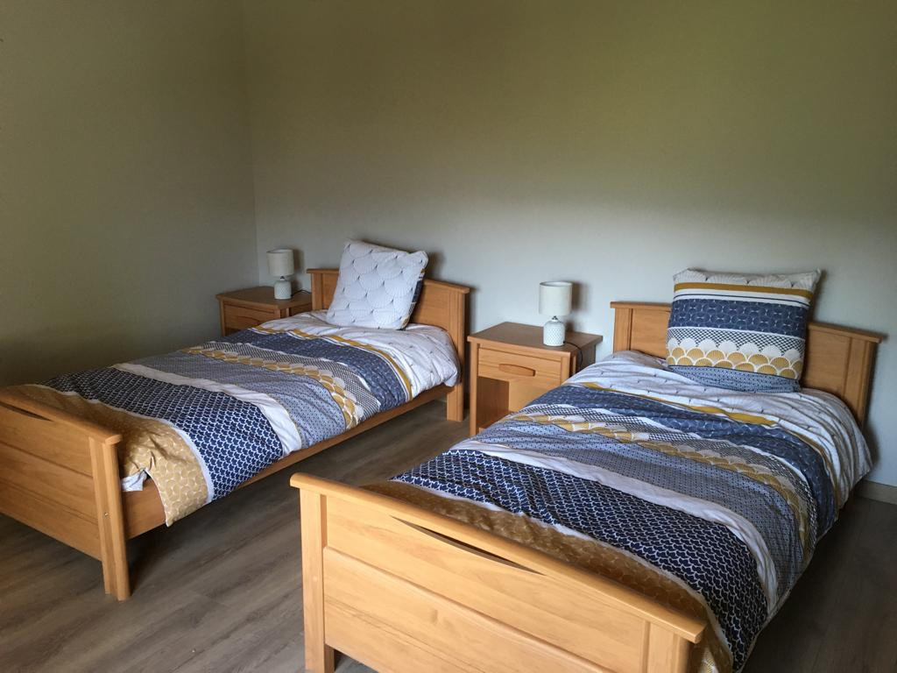
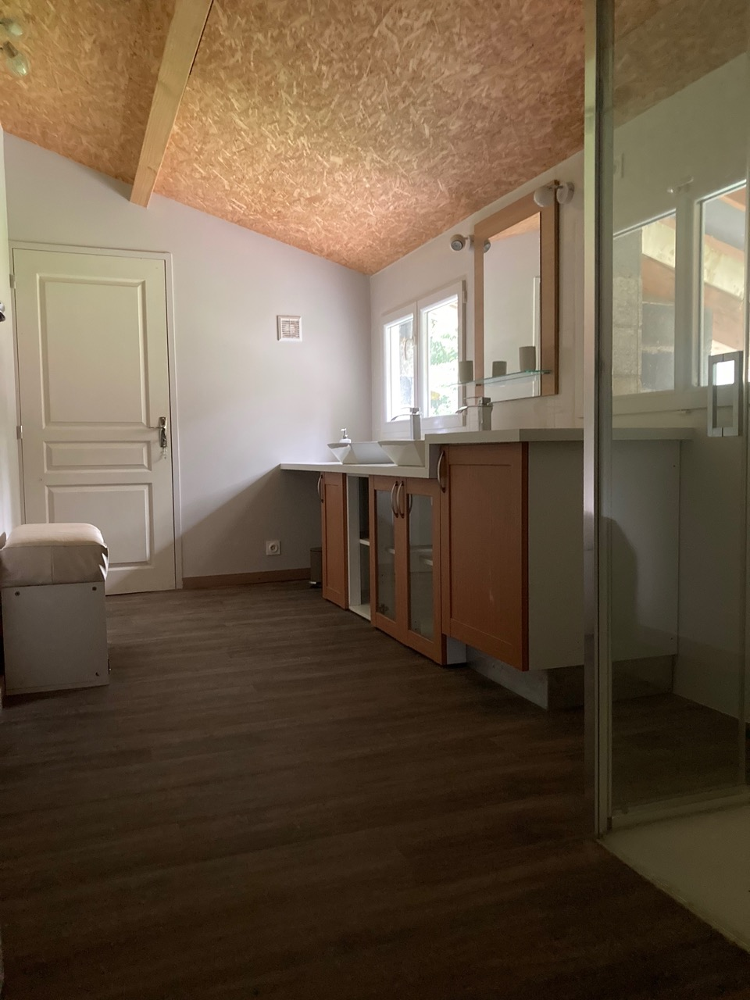
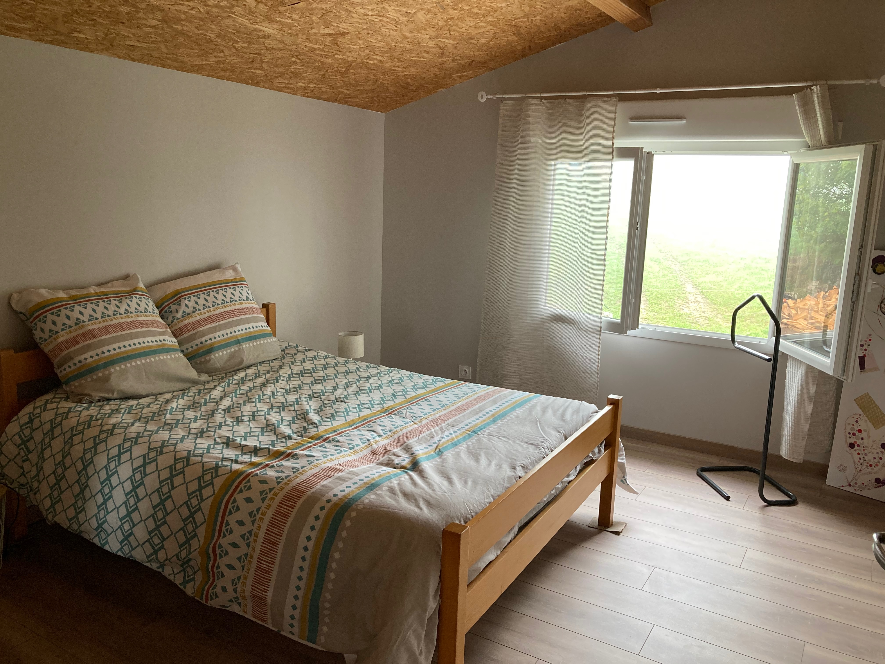
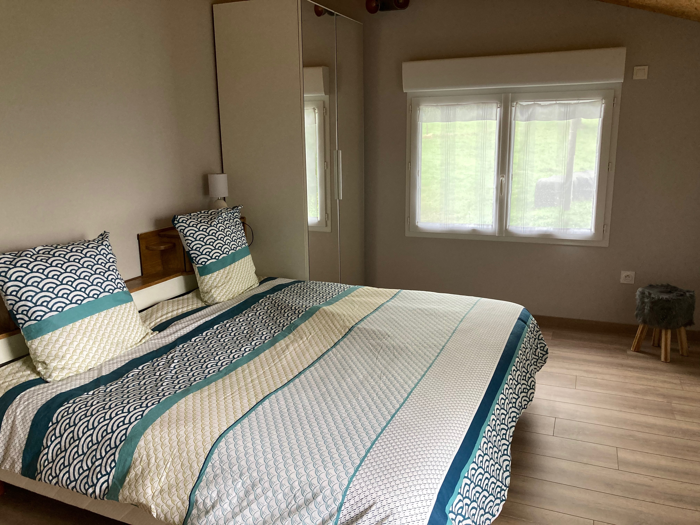
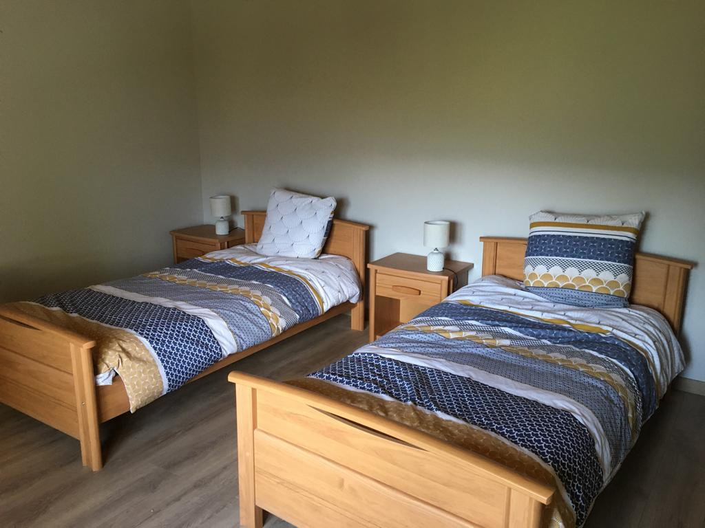
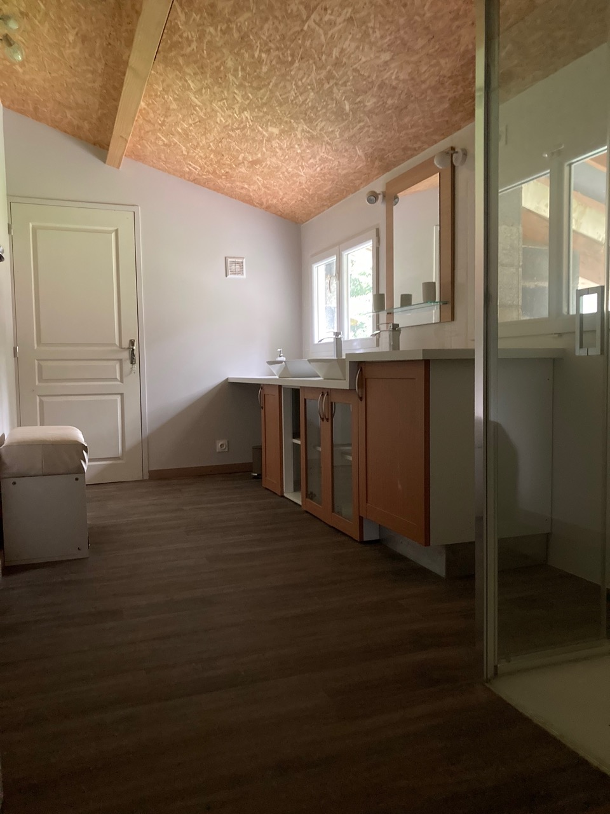

Maison Lacournère
Gîte 4 étoiles pour 8 personnes à Nistos dans les Hautes-Pyrénées, à partir de 92€/nuit
Le gîte
8 personnes • 4 chambres
 







Dans son écrin vert, la maison Lacournère vous invite au calme et à la détente. En famille ou entre amis, nous vous accueillons à Nistos dans les Hautes-Pyrénées. Petit village de montagne qui abrite une flore et une faune riches et préservées. De la mi-septembre à la mi-octobre, vous pourrez entendre le brame du cerf. Lieu magique pour les amateurs de pêche, de randonnées, de ski de fond, de piste ou de raquettes, d'escalade, de VTT, de vélo sur des routes qui vous mènent vers les grands cols des Pyrénées. Cette maison est très bien ensoleillée, avec vue sur la montagne. L'extérieur sera un espace de jeu naturel que ce soit pour les grands ou pour les petits. Vous pourrez aussi apprécier une bonne raclette au coin du feu et une bonne grillade en été (ou le contraire). La maison est située au croisement de nombreuses activités et de nombreux lieux à visiter : Saint Bertrand de Comminges, les grands cols Pyrénéens, les lacs de montagne, Lourdes, l'Espagne, le golf de Lannemezan, etc.
Équipements
La maison Lacournère est entièrement équipée afin de simplifier votre séjour.
-
Cuisine équipée, lave vaisselle, four électrique, micro-ondes, réfrigérateur-congélateur, cafetières (filtre et senseo), grille-pain, appareil à raclettes et grill, appareil à fondue. Vaisselle et ustensiles.
Salon équipé d’une télévision et du wifi. Cheminée avec insert vous apportera chaleur et réconfort. Chauffage électrique dans toutes les pièces (voir les tarifs pour l'électricité et le bois de chauffage).
WC, douche et cellier. -
4 grandes chambres :
- Lit en 140 et une couette en 220/240,
- Lit en 180 et une couette en 220/240,
- Lit en 140 et une couette en 220/240,
- 2 lits en 90 et une couette en 140/200
Couvertures supplémentaires, cintres, salle de bains, WC indépendant, petite bibliothèque avec livres et jeux de société. -
- Lave linge
- Étendoir à linge, table et fer à repasser
- Matériel de puériculture
- Barbecue
- Salon de jardin
- Parking
Accès
La maison Lacournère se situe au 26, route du Sausset, 65150 Nistos.
Activités
Découvrez les activités de la région. Cliquez sur les activités ci-dessous pour trouver des idées qui pourront enrichir votre séjour.
Station de ski nordique de Nistos-Seich
Nistos-Seich
~15km
Randonnées pédestres et VTT autour de Nistos-Seich
Nistos-Seich
~15km
Stations de ski alpin de la vallée
Saint-Lary, Piau, Peyragudes, Val-Louron...
~40km
Parc de Loisirs de la Demi-Lune
Lannemezan
~25km
Monuments historiques
Les grottes de Gargas, le château de Mauvezin, le gouffre d'Esparos, la cité médiévale de Saint-Bertrand de Comminges...
~25km
Espaces aquatiques
Les Ocybelles, Balnéa, Aquensis...
Grands sites Pyrénéens
Le pic du Midi, le cirque de Gavarnie, les lacs du Néouvielle, la ville de Lourdes...
Si vous ne parvenez pas à trouver votre bonheur parmi les activités proposées, n'hésitez pas à consulter les sites des offices du tourisme des alentours.
Office du Tourisme de Neste-Barousse
Saint-Laurent de Neste
~10km
Office du Tourisme du Cœur des Pyrénées
Lannemezan
~25km
Office du Tourisme de Bagnères-de-Bigorre
Bagnères-de-Bigorre
~45km
Office du Tourisme de Saint-Lary-Soulan
Saint-Lary-Soulan
~45km
Office du Tourisme de la vallée du Louron
Loundenvielle
~50km
Office du Tourisme de Bagnères-de-Luchon
Bagnères-de-Luchon
~50km
Tarifs
Nous vous proposons des tarifs à la semaine et pour les week-end. N'hésitez pas à nous contacter pour plus d'informations.
La nuité
| Hors vacances | 92€ |
| Vacances hiver, printemps et Toussaint | 121€ |
| Vacances d'été | 135€ |
| Nöel ou premier de l'an | 158€ |
- Électricité • 0.15€/kwh, consommation facturée selon relevé de compteur effectué à l’arrivée et au départ
- Bois • Facturé au prix de 60€ le stère au prorata de la consommation
- Les draps et le linge de toilettes sont fournis. Les lits seront faits à votre arrivée.
- Ménage fin de séjour : 150 € • Caution : 500 €
Contact
- Par téléphone au : 06 71 97 34 79
- Par mail à l'adresse : anne-marie.fontan@wanadoo.fr
Site web -
@remyduthu
© 2021 Maison Lacournère. Tous droits réservés.